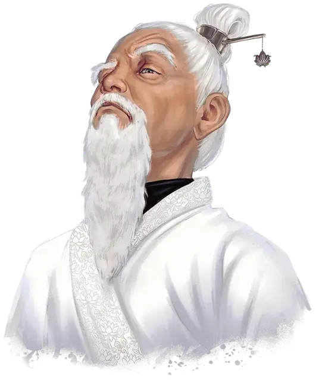

Бак Мэй
Bak Mei
Средний Гуманоид (Человек), законно-злой, именной НИП

Класс Доспеха 17 (защита без доспехов)
Хиты 102 (12к8 + 48)
Скорость 40 футов
| мод | спас | ||
|---|---|---|---|
| СИЛ | 10 | +0 | +5 |
| ЛОВ | 18 | +4 | +9 |
| ТЕЛ | 18 | +4 | +9 |
| мод | спас | ||
|---|---|---|---|
| ИНТ | 13 | +1 | +6 |
| МДР | 17 | +3 | +8 |
| ХАР | 16 | +3 | +8 |
Навыки Акробатика +9, Атлетика +5, Медицина +8, Религия +6, Скрытность +9
Сопротивление урону звук, яд
Иммунитет к состояниям паралич, очарование, испуг
Чувства пассивное Восприятие 13
Языки Общий, Ауран
Опасность 13 (10000 опыта)
Бонус мастерства +5
Особенности
Особое снаряжение. Бак Мэй имеет при себе посох ударов [staff of striking] с 10 зарядами.
Легендарное сопротивление (2/день). Если Бак Мэй проваливает спасбросок, он может вместо этого сделать спасбросок успешным.
Защита без доспехов. Пока Бак Мэй не носит ни доспехи, ни щит, к КД прибавляется его модификатор Мудрости.
Черта характера. «Я сужу о других по их поступкам. Слова ничего не значат.»
Идеал. «Знание. Книга о Духовной Алхимии поможет мне оставить позади грехи моего прошлого, давая мне бесконечное будущее.»
Привязанность. «Я приведу своих учеников к жизни, незапятнанной мирскими проблемами. Мы поднимемся над всеми в вечность.»
Слабость. «Я убежден, что заслуживаю вечной жизни, несмотря на все страдания, которые я причинил другим.»
Действия
Мультиатака. Бак Мэй атакует трижды: дважды Громовым ударом и один раз Посохом ударов.
Громовой удар. Рукопашная атака оружием: +9 к попаданию, досягаемость 5 фт., одна цель. Попадание: 15(2к10 + 4) урона звуком и если цель - существо, оно должно преуспеть в спасброске Телосложения Сл 17, иначе станет оглохшей и ошеломлённой до начала следующего хода Бак Мэя.
Посох ударов. Рукопашная атака оружием: +9 к попаданию, досягаемость 5 фт., одна цель. Попадание: 3 (1к6) дробящий урон, или 4 (1к8) дробящий урон при двуручном хвате, и Бак Мэй может израсходовать до 3 зарядов посоха. За каждый израсходованный заряд цель дополнительно получает 1к6 урона силовым полем.
Самолечение (перезарядка после продолжительного отдыха). Бак Мэй восстанавливает 2к8 + 4 хитов и снимает все степени истощения.
–бонусное действие–.
Ловкий побег. Бак Мэй может в каждом своём ходу бонусным действием совершать действие Засада или Отход.
Реакции
Отражение снарядов. Бак Мэй может реакцией поймать снаряд, если по нему попали дальнобойной атакойоружием. Урон от этой атаки уменьшается на 1к10 + 12. Если урон уменьшился до 0, Бак Мэй ловит снаряд, если тот достаточно мал, чтобы держать его одной рукой, и у Бак Мея есть свободная рука.
Легендарные действия
Бак Мэй может совершить 3 легендарных действия, выбирая из представленных ниже вариантов. За один раз можно использовать только одно легендарное действие, и только в конце хода другого существа. Бак Мэй восстанавливает использованные легендарные действия в начале своего хода.
Танец Журавля. Бак Мэй перемещается на 20 футов не провоцируя при этом атак.
Громовой удар (стоит 2 действия). Бак Мэй совершает Громовой удар.
Описание
Когда-то Бак Мэй был ловким опытным монахом из нации Шу, известный тем, что отстаивал справедливость и помогал нуждающимся на своей родине, далеко на востоке Фаэруна. По мере того как он становился старше, всё больше узнавал о мире и начинал ощущать груз прожитых лет, его мировоззрение изменилось. Движимый растущим страхом перед смертью, Бак Мэй стал одержим идеей бессмертия. Он начал собирать на эту тему различные руководства, консультироваться с практикующими некромантию адептами и искать аудиенции у темных сил.
Настоятели его храма, узнав о кардинально изменившихся устремлениях, потребовали у Бак Мэя прекратить свою деятельность. В ответ он попытался устроить в храме мятеж, что привело к вероотступлению и дальнейшему отлучению Бак Мэя и его последователей, окрестившими себя в итоге Орденом Бессмертного Лотоса. Немногочисленная группировка в конце концов поселилась в лесу возле Врат Балдура, где и набирают новых рекрутов в орден. Под жесткой опекой Бак Мэя и его эксцентричными методами обучения численность и сила ордена росла, давая возможность спланировать их лидеру месть для своих бывших наставников.
Среди монахов Фаэруна Бак Мэй довольно известен. Некоторые считают его изгнанным из ордена за предательство и пренебрежения традициями мерзавцем, другие видят в нем радикально настроенного искателя знаний. Бак Мэй - старец с длинной белой бородой и кустистыми бровями. Как и другие члены его ордена, Бак Мэй одет в белоснежную, подпоясанную чёрным поясом рясу, поверх облегающей чёрной рубашки и брюк.